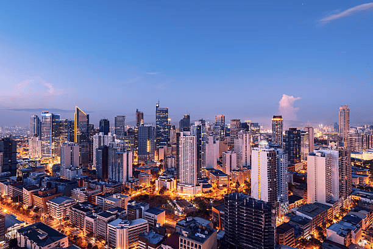
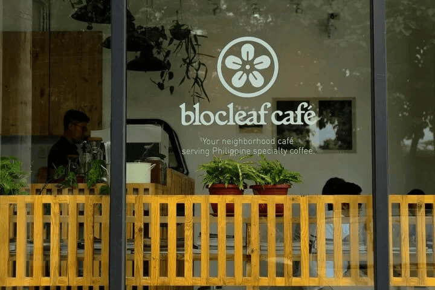
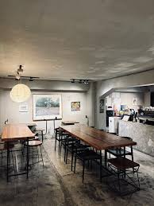
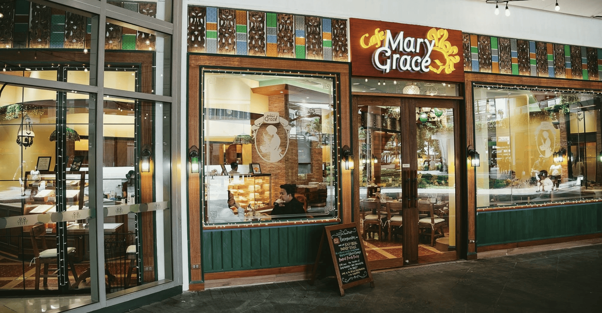

Why Manila?
Manila, the Pearl of the Orient
Long before colonial rule, Manila was known as Maynilad, a riverside settlement named after the nilad plant that grew along the Pasig River. It was already a bustling hub of trade, where merchants from China, India, and neighboring islands exchanged goods and stories. In 1571, the Spanish established their stronghold within the stone walls of Intramuros, turning Manila into the capital of their empire in Asia. Over centuries, the city absorbed layers of influence Spanish, American, Japanese yet it retained its own resilient Filipino spirit, shaped by the river and the bay that sustained it.
Today, Manila’s past and present flow together. Inside Intramuros, cobblestone streets lead to centuries old churches like San Agustin and the enduring bastions of Fort Santiago. Beyond the walls, modern skyscrapers rise beside colonial houses, jeepneys painted in bright colors weave through crowded streets, and the scent of adobo and halo-halo drifts from roadside eateries. As the day ends, the golden glow of a Manila Bay sunset casts its light over the city, reminding visitors that Manila is not just a capital it is a living tapestry of history, culture, and resilience.
CAFÉS
My favorite cafés in Manila

Blocleaf Cafe
A lively neighborhood café in Malate with a minimalist design and warm atmosphere, Blocleaf Café serves everything you could want from breakfast sandwiches and comforting pasta to indulgent cheesecakes and specialty Philippine coffee.
Address:
Pedro Gil Street, Malate, Manila
What I like about it
This is one of the best spots in Manila for enjoying local coffee culture, but if you go at any time of day there will be something delicious on the menu!

The Den Cafe
The Den Café in Manila is a creative hub inside the historic First United Building on Escolta Street, blending coffee, culture, and community. It’s a place where you can enjoy specialty drinks, comforting food, and a vibrant atmosphere any time of day.
Address:
First United Building, Escolta Street, Manila, Philippines
What I like about it
This is one of the best spots in Manila to experience coffee and culture together. Whether you’re stopping by for a perfectly brewed iced latte, a plate of lemon pasta or grilled cheese, or simply to soak in the creative energy of Escolta, there will always be something delicious and inspiring on the menu

Mary Grace Cafe
A warm and inviting café found in many spots across Manila, Mary Grace Café is best known for its comforting Filipino inspired dishes, freshly baked pastries, and signature ensaymada and cheese rolls. It’s the kind of place where you can enjoy a hearty breakfast, a cozy lunch, or a sweet afternoon treat with coffee or hot chocolate.
Address:
Multiple branches across Manila (popular ones in Greenbelt, Serendra, and SM malls)
What I like about it
This is one of the most beloved café chains in Manila whether you go for their famous ensaymada, a comforting pasta, or simply to relax with friends, there will always be something delicious and heartwarming on the menu!